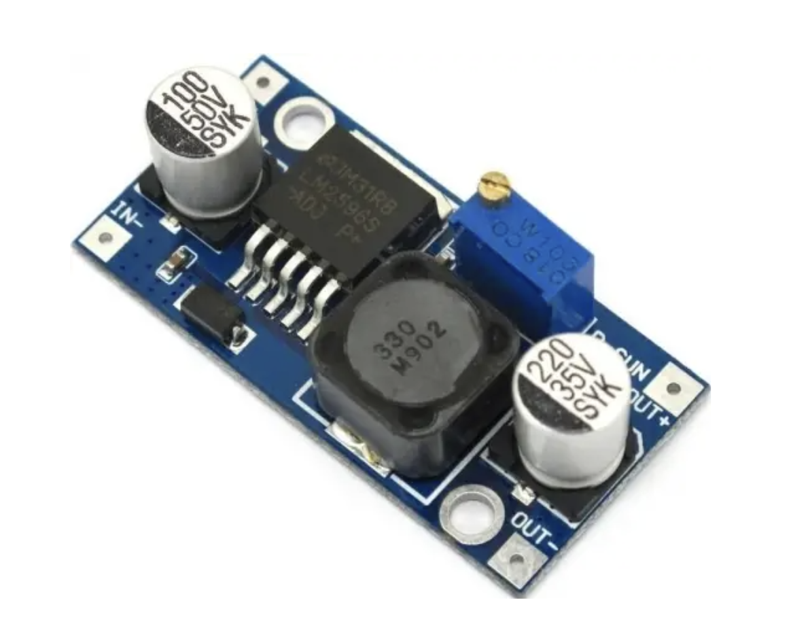

1 / 2
Buck 5V
LM2596S понижуючий DC-DC модуль для живлення Raspberry Pi.
- OUT налаштувати на 5V до підключення Raspberry Pi.
- IN підключається до Battery + / Battery -.
- OUT+ йде на Raspberry Pi 5V pad, OUT- на Raspberry Pi GND pad.